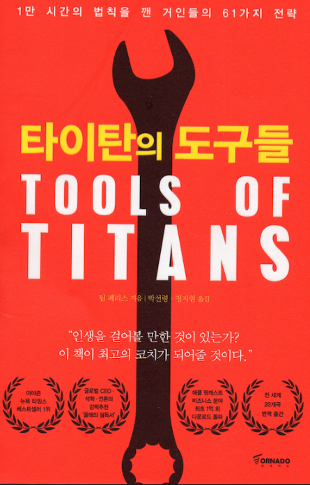

음악은 주로 한곡에 빠져들면 한달동안 반복재생 합니다. 최근 푹 빠져있는 음악을 소개할게요
저를 많이 바꾸어놓은 큰 취미중 하나입니다. 살을 빼려고 시작한 운동이 이제는 빼놓아서는 안되는 삶의 활력소가 되었죠
Push, Pull, Leg 이렇게 3분할로 운동을 합니다.
그리고 마지막은 유산소 걷기로 마무리를 해줍니다.
탄수화물, 단백질, 지방으로 잘구성된 식단을 고려합니다.
내 인생에 있어서 절대 빼놓을 수 없는 취미 입니다. 단단한 정신력을 갖게해주었죠
타이탄의 도구들 - 팀페리스 